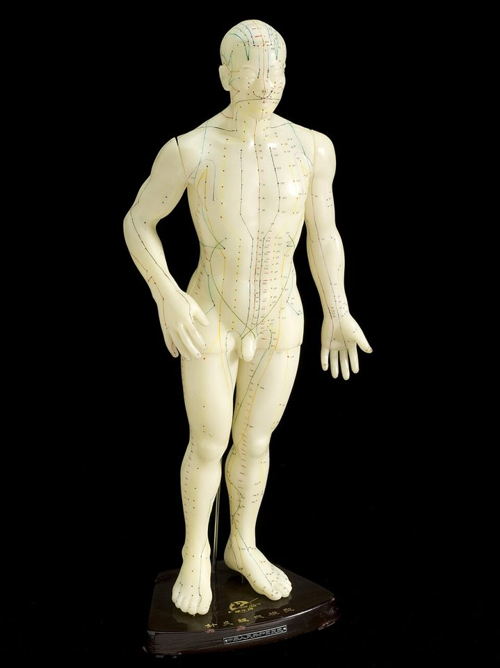

十二経脈の走行と動作ライン
十二経脈は、身体を縦に貫く12本の主線です。その走行をたどると、武術の動作のラインと重なる部分が見えてきます。

十二経脈とは
中医学では、気血が巡る通り道を経絡と呼び、その主幹を十二経脈（十二正経）とします。手の三陰三陽、足の三陰三陽からなり、肺経・大腸経・胃経・脾経・心経・小腸経・膀胱経・腎経・心包経・三焦経・胆経・肝経の12本です。各経脈は内臓（臓腑）と結びつき、手足の末端から体幹、頭部へと巡り、互いに接続して全身を一巡する流れとして描かれます。
| 区分 | 経脈 | おもな走行の特徴 |
|---|---|---|
| 手の陰経 | 肺経・心経・心包経 | 胸から腕の内側を通り、指先へ |
| 手の陽経 | 大腸経・小腸経・三焦経 | 指先から腕の外側・背側を通り、頭部へ |
| 足の陽経 | 胃経・膀胱経・胆経 | 頭部から体幹・下肢の前面・後面・側面を下り、足先へ |
| 足の陰経 | 脾経・腎経・肝経 | 足先から下肢の内側を上り、腹部・胸部へ |
走行と動作ラインの重なり
武術の動作に当てはめてみると、いくつかの対応が見えてきます。たとえば、下肢の後面をまっすぐ下る足の太陽膀胱経のラインは、蹴りや踏み込みで背面の筋群が連動するラインと重なります。体幹の側面を蛇行しながら巡る足の少陽胆経のラインは、体をひねる動作や横への移動で働く側面のラインと重なります。腕の内側を走る手の陰経のラインは、掴む・引く動作のラインと重なります。
もちろん、経絡の走行は筋肉の並びそのものではありません。経絡は伝統理論上のネットワークであり、解剖学的な構造物と一対一に対応するわけではない、というのが現代の一般的な理解です。それでも、長年の身体観察の蓄積が、動作の連動しやすいラインを言い当てている部分がある——その重なりを確かめることが、このカテゴリの目的です。
力学の物差しで見ると
力学の側から見れば、ここで言う「動作ライン」は運動連鎖のラインにほかなりません。地面反力を受けて力が伝わる順序が、結果として経絡の走行と似た軌跡を描く場面がある。この一致は、経絡と筋膜ラインの対応として次の記事でさらに整理します。
経絡は中医学の伝統理論です。本記事はその理論体系の紹介であり、医療行為や治療効果を示すものではありません。